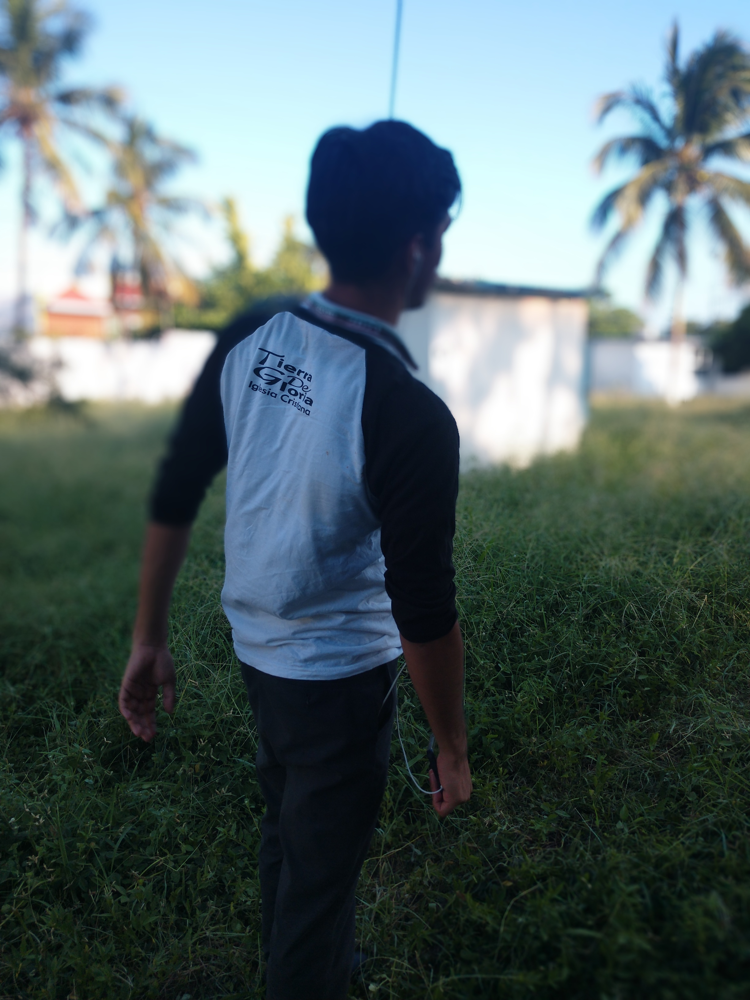
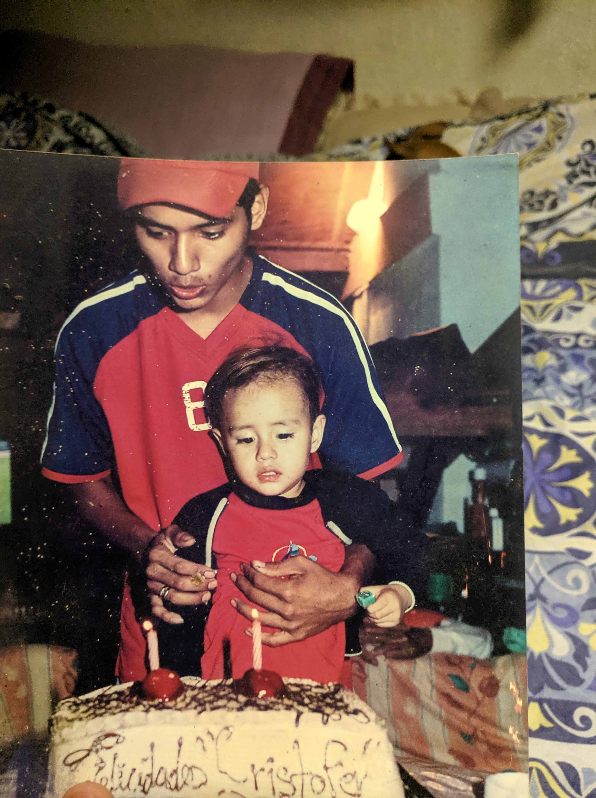
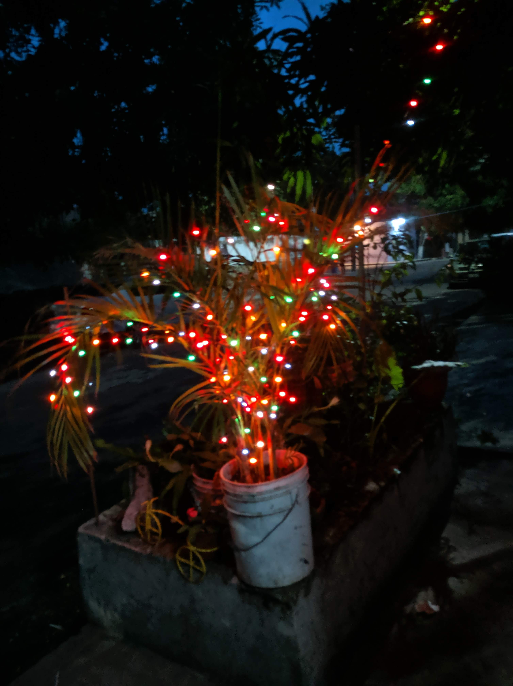

"¿Yo?"

La historia de mi vida
Ese soy yo :3 :

Mi nombre es Cristopher Eduardo Ascencio Cruz, en el día de hoy que escribo esto tengo 16 años y mi cumpleaños es el 26 de octubre, nací en el 2003, soy de Boca del Rio Veracruz y mi madre nacio y se crio en Oaxaca, en cambio mi padre nacio aquí en Veracruz, en fin, desde siempre e sido una persona muy callada y tranquila, pero aún asi, soy extrovertido y me gusta convivir bastante con mis amigos, me gusta bastante jugar videojuegos como PUBG, Call of Duty, Halo, Destiny, Forza, entre otros, y adoro escuchar música principalmente canciones en ingles como electronica, pop o indie, inclusive rock y mis artistas favoritos son: Illenium, The Chainsmokers, Martin garryx y principalmente Twenty One Pilots entre otros. Me gusta mucho comer pizza y patatas fritas en exceso, aunque mi complexión es delgada. La historia de mi vida es algo cliche, considero yo, ya que pues me han pasado demasiadas cosas igual que en peliculas de drama, pero en fin, no puedo hacer nada al respecto conforme a eso, ¿Pero qué podria haberme pasado como para considerarlo de esa forma? pues una serie desencadenada de acontecimientos como la muerte de 2 hermanos míos, uno que ni siquiera pudo abrir los ojos y el más cercano a mi que dejo atrasa mis 2 sobrinas pequeñas, o que quiza jamas conoci, ni conocere a mi papá, mi mamá prefirio tener otro hijo, en vez de hacerse cargo de mí, y de todos modos, mi situación actual no es la mejor que digamos, pero me siento algo conforme. Algo agradable es que conocí a una chica muy linda hace ya unos pocos meses, con la que comparto demasiado en común (DEMASIADO), es como hablar conmigo mismo y al menos para mí eso es bastante lindo y me encanta la idea de saber que tengo a alguien que me entiende completamente.
Recuerdo mi infancia como algo muy lindo y uno de mis recuerdos favoritos, aunque es algo borroso, por alguna razón me gusta demasiado y pues este trata sobre un inicio con una vista al mar, y termina conmigo acostado en la cama de mi cuarto, con mi madre a un lado mío viendo la televisión, como dije por alguna razón parece que fue un maravilloso día, aunque yo considero maravilloso todos los días que puedo bajar las escaleras para ver a mi madre haciendo la comida. De mi infancia recuerdo bastante, afortunadamente o desafortunadamente olvidar algo, o algún momento bueno o malo, para mí es bastante díficil, acostumbraba demasiado jugar videojuegos en mi xbox, recuerdo que tuve 3 xbox 360, un playstation 1 y 2, una psp y un psvita (este fue el que más me gusto). Cuando era más pequeño solía llora bastante y a dia de hoy soy bastante sentimental pero en fin. Recuerdo que la primaria fue algo dificil para mi, principalmente porque durante el 3 año murio mi hermano, de ahi me costo basante aprender, aunque cuando llegue a la secundaria cambio todo pero no tenía ningún interes más que llegar a mi casa y jugar videojuegos, y de ves en cuando sigo con ese interes, pero me concentro más en los estudios o al menos lo intento, además de eso desde que entre a la secundaria desperte un interes por la ciencia y a día de hoy, aun pienso en estudiar ingeniería quimica, pero de igual manera me gusta muchisimo programar y crear páginas web.
Un poco más sobre mi
Hice esta sección para hablar sobre los videojuegos que me gustan más que nada, como dije anteriormente, los videojuegos son algo que me gusta bastante, casi se podria decir que me apasiona y unos de mis juegos favoritos como tambíen ya dije anteriormente, son call of duty, pubg, entre otros y Sinceramente gracias a ellos, pude conocer gente bastante agradable, ya que soy muy afortunado para toparme con gente demasiado buena (la mayor parte de las veces), y bueno en mi travesia por videojuegos he tenido muchos nombres como: Efridet (mi principal nombre hasta ahorita), Venandi, GhostHunter0424, Cristo2003ILYD (my gamertag en xbox), y curiosamente cada nombre tiene un significado, no solamente fue lo primero que se me ocurrio, y también las historias detras de algunos de los nombres son muy cómicas, como Efridet ese nombre me lo puse por el videojuego destiny, ya que en ese juego había una heroína llamada "Efrideet" a la cual yo admire mucho por su lore, y pues para no plagear totalmente su nombre me puse así. Cristo2003ILYD tiene la historia más comica o curiosa a mi parecer, ya que ese nombre salío a raíz de que yo en 1er año de secundaria, pues apenas estaba iniciando en los juegos online en xbox y pues necesitaba un nombre y en ese entonces yo tenía una novia llamada "Danna" y pues pense que sería ponerme ILYD (I LOVE YOU DANNA) como parte de mi nombre, y pues como cambiarlo cuesta $300, preferí no hacerlo y afortunadamente después, empece a jugar Destiny y le digo a todos con los que juego que la "D" de ILYD es por destiny. Después Venandí, no tiene mucho misterio, un dia buscando un nombre para un juego se me ocurrio buscar la definición en latín de "Cazador" y el resultado fue Venandi. GhostHunter0424 también tiene que ver con una chica, pero esta vez fue, durante finales de 2do año de secundaria eh inicios del 3ero, que fue cuando me llevaba bastante bien con una chica de mi salón, que también le gustan mucho los videojuegos, y era bastante linda conmigo, así que termine enamorandome de ella, y parecia que ella de mí, pero jamas le pedi que fuera mi novia, en ese entonces su nombre en xbox era "Tao0424" porque ella se llamaba "Taomi" (más bien su segundo nombre), entonces de igual manera, se me ocurrío que seria buena idea ponerme 0424, como parte de mi tag. Afortunadamente la chica con la que me encuentro actualmente en una "relación" también le gustan bastante los videojuegos y nos reímos bastante contando mis historias.
Por el momento, mi computadora se descompuso (en la que jugaba) y vendi mi consola hace 2 años, para no perder tiempo, así que soy jugador de télefono, y es curioso que muchos digan que "jugar en celular no te da el derecho a ser gamer" pues al menos yo siento que todo lo contrarío ya que hay buenos títulos y en lígas altas de algunos videojuegos, hay bastantes buenos jugadores, que juegan a la altura de un gamer de consola y casi de pc, pues es un poco más dificil jugar en celular, ya que depende de la pantalla y tu abilidad con los dedos, ya que hay menos espacio para mover la mira, para controlar el retroceso de las armas por ejemplo, y pues yo no me considero tan bueno, más bien soy un jugador promedio, aunque me gustaria poder jugar como los jugadores competitivos, en lo personal a aquellas personas que no hayan probado "PUBG" ó "CoD" se lo recomiendo bastante, ya que es donde más jugadores competitivos hay, aunque también me gustan los juegos indie como Undertale (es de mis). Aquí dejo los enlaces para descargar los 2 juegos.
Fotos
Estas son algunas fotos que e tomado (no necesariamente mías, ademas de que no tengo fotos de pequeño).
Está foto se la tome a mi mejor amigo Kenneth por ejemplo:
Esta otra me la tomaron cuando cumpli 2 años (el que me sostiene es mi 2do hermano mayor):
La siguiente foto la tome durante navidad (aunque quizá no sea el pino más bonito):
Esta foto se la tome a mi perrita:

Videos
Sinceramente, no sabia que poner en esta parte, así que agregue videos que he grabado en viajes, con un poco de música que me gusta: